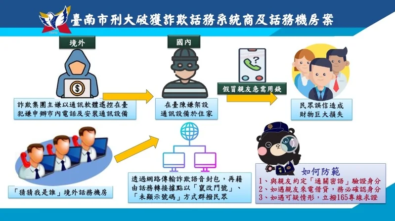

國際詐騙電話總通數及攔截率
國際詐騙電話近年來數量持續攀升，警方與電信業者雖加強攔截，但詐騙集團手法不斷進化。根據最新新聞，台南刑大偵七隊破獲一樁利用「網路電話交換機」（IPPBX）搭配市內電話的詐騙模式。詐團透過竄改門號或隱藏來電資訊，隨機撥打電話，以「猜猜我是誰」方式鎖定民眾，短短兩個月內便造成超過 20 人受害。這種方式使得受害者即使具備高學歷或警覺心，仍難以辨識真偽，顯示詐騙的滲透力與欺騙技巧正快速提升。
進一步分析發現，這些詐團利用境外機房將語音透過高速網路傳回國內，並經由在地合作人架設的設備轉接，讓詐騙電話看似來自本地市話。這種模式僅需投入三至四萬元成本，卻能造成數百萬元財損，顯示詐團在技術與資源運用上極具效率。警方已逮捕涉案的嫌犯，並查扣非法通訊設備，但案件也突顯出台灣在電信設備管制上的漏洞，尤其部分裝置從中國網路商城即可輕易購得，增加了打擊難度。
面對此類跨境電信詐騙，單靠警方攔截仍不足。民眾需要更積極的防詐意識，例如與家人約定專屬「通關密語」以防冒名，並避免因小利而將電話門號出租予詐團。配合 Power BI 報表的數據觀察，我們可以清楚看到每月詐騙電話的總通數與攔截率，若將此類案件與攔截成效結合分析，更能突顯跨境詐騙對國內社會的威脅程度。唯有透過數據監測、法律落實與全民防範，才能逐步降低受騙的風險，讓國際詐騙電話無所遁形。
